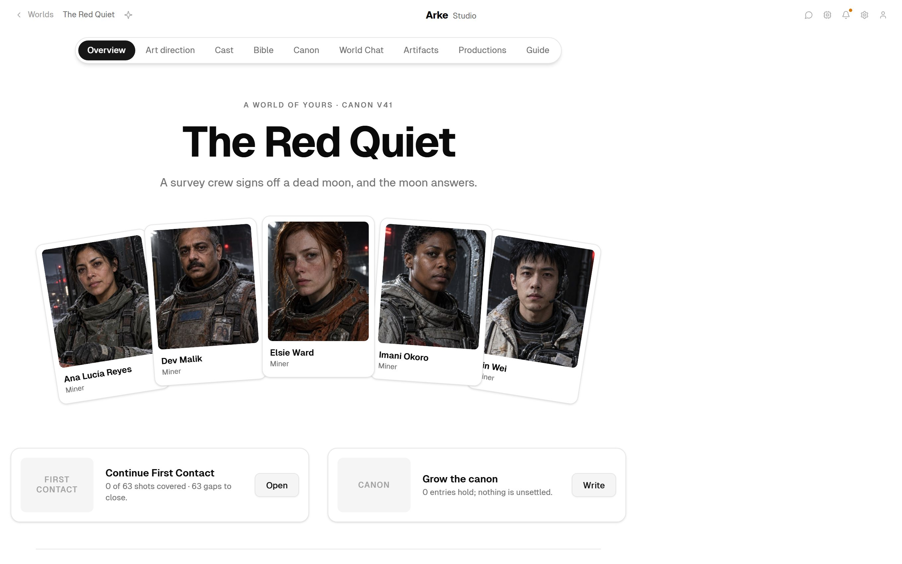
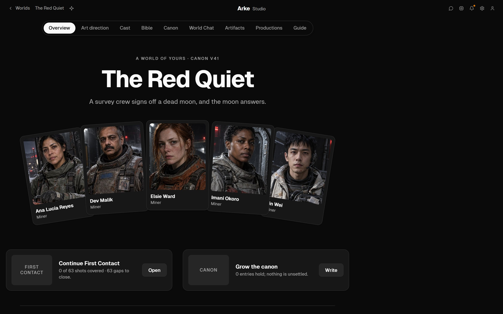
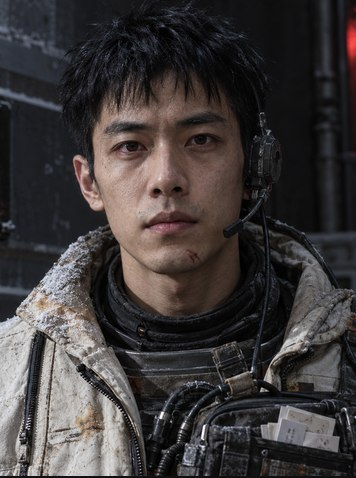
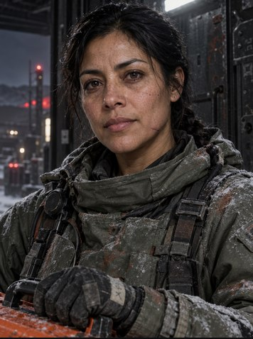
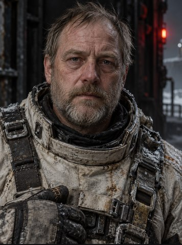
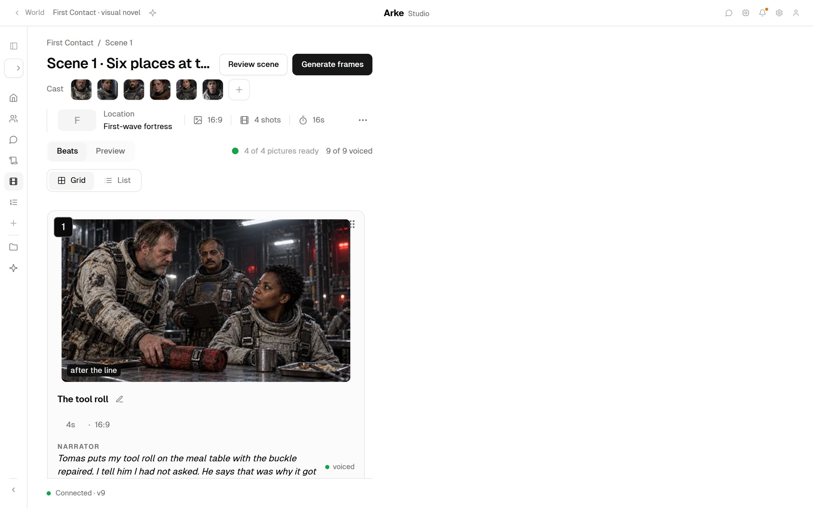
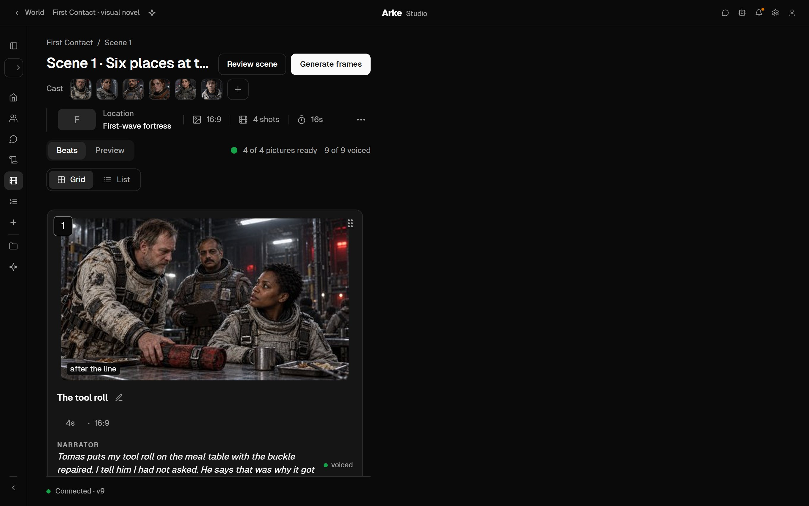
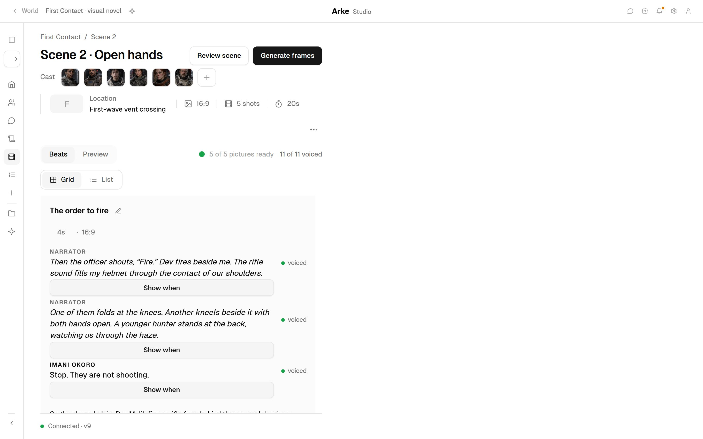
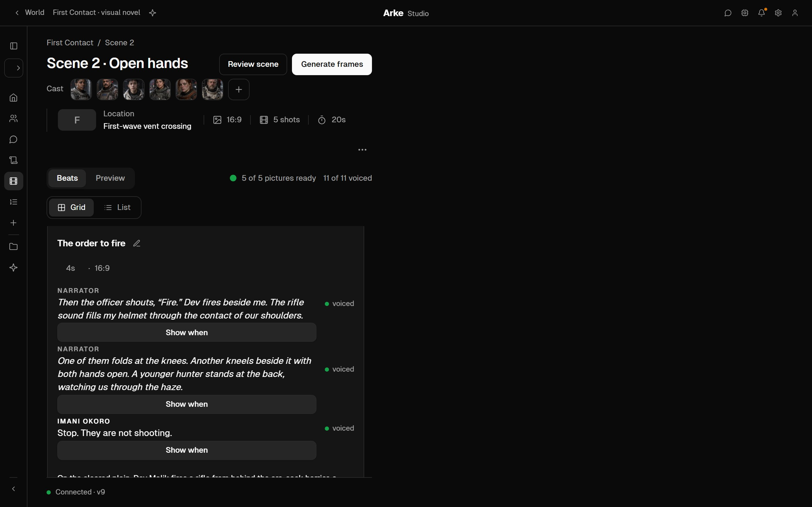

250a Design voices for the miners: six in one card, Imani open · new: the voices card · beside today’s world home


World Chat
The Red Quiet / Voices for the miners
Design voices for the miners.
Two voices each, from their sheets, reading two of their own lines.
ListenCopy
Design 12 voices6 characters · 2 lines each · Gemini 3.8 Flash TTS · ~$1.86
DesignedTwelve voices, two a character. Play each before you choose.
✓ Designed 12 voices · $1.86
ListenCopy
 Imani OkoroPick B
Imani OkoroPick BA5.3 sB5.1 s
Brief150 a min · mid, warm160 a min · lower, fuller
Pace207 a minFast213 a minFast
StopsRun-onhome. Dev.Run-onDev. Wait
Words17 of 1717 of 17
Pitch148 Hz149 Hz
Accentnot measured
Arke’s pick: B. A runs “home. Dev.” together, so the meaning changes.
Use Aplay firstUse B
 Dev MalikPick A
Dev MalikPick A
Lin WeiPick B
Ana Lucía ReyesPick A Elsie WardPick A
Elsie WardPick A
Tomas ValePick AKeep going…
250b Lin Wei: briefed a tenor, reads lower; Use B waits for a play · new: the voices card · beside today’s world home
World Chat
The Red Quiet / Voices for the miners
Design voices for the miners.
Two voices each, from their sheets, reading two of their own lines.
ListenCopy
Design 12 voices6 characters · 2 lines each · Gemini 3.8 Flash TTS · ~$1.86
DesignedTwelve voices, two a character. Play each before you choose.
✓ Designed 12 voices · $1.86
ListenCopy
Imani OkoroUsing BDev MalikUsing ALin WeiPick B
A10.0 sB9.6 s
Brief160 a min · light tenor145 a min · light baritone
Pace166 a min171 a min
StopsRun-onchannel. Local4 of 4
Words26 of 2626 of 26
Pitch97 HzLower than B107 Hz
Accentnot measured
Arke’s pick: B. A was briefed the higher voice and reads 10 Hz under B.
Use AUse Bplay first
Ana Lucía ReyesPick A
Elsie WardPick ATomas ValePick A
Keep going…
250c Different enough? A judgement, then its evidence · new: the evidence card and ✓ Read 4 measures · beside today’s world home
World Chat
The Red Quiet / Voices for the miners
Design voices for the miners.
Two voices each, from their sheets, reading two of their own lines.
ListenCopy
Design 12 voices6 characters · 2 lines each · Gemini 3.8 Flash TTS · ~$1.86
DesignedTwelve voices, two a character. Play each before you choose.
✓ Designed 12 voices · $1.86
ListenCopy
Imani OkoroUsing BDev MalikUsing ALin WeiUsing B
Ana Lucía ReyesUsing A
Elsie WardUsing ATomas ValeUsing A
Do Dev, Lin Wei and Tomas sound different enough?
Not by pitch. All three sit at 104 to 107 Hz.
Pace parts them a little. Accent has to do the rest, and I can’t judge accent.
Dev’s B, at 139 Hz, would stand apart, but it cuts the stop after “I fired.”
Pace parts them a little. Accent has to do the rest, and I can’t judge accent.
Dev’s B, at 139 Hz, would stand apart, but it cuts the stop after “I fired.”
✓ Read 4 measures
ListenCopy
Pitch and paceClose · 104–107
80120160Hza min
Dev MalikA · using104165
Lin WeiB · using107171
Tomas ValeA · using107176
Dev MalikB139196
Keep going…
250d What Arke cannot hear: accent · new: the not-measured card and ✓ Read 2 measures · beside today’s world home
World Chat
The Red Quiet / Voices for the miners
Design voices for the miners.
Two voices each, from their sheets, reading two of their own lines.
ListenCopy
Design 12 voices6 characters · 2 lines each · Gemini 3.8 Flash TTS · ~$1.86
DesignedTwelve voices, two a character. Play each before you choose.
✓ Designed 12 voices · $1.86
ListenCopy
Imani OkoroUsing BDev MalikUsing ALin WeiUsing B
Ana Lucía ReyesUsing A
Elsie WardUsing ATomas ValeUsing A
Do Dev, Lin Wei and Tomas sound different enough?
Not by pitch. All three sit at 104 to 107 Hz.
Pace parts them a little. Accent has to do the rest, and I can’t judge accent.
Dev’s B, at 139 Hz, would stand apart, but it cuts the stop after “I fired.”
Pace parts them a little. Accent has to do the rest, and I can’t judge accent.
Dev’s B, at 139 Hz, would stand apart, but it cuts the stop after “I fired.”
✓ Read 4 measures
ListenCopy
Pitch and paceClose · 104–107
80120160Hza min
Dev MalikA · using104165
Lin WeiB · using107171
Tomas ValeA · using107176
Dev MalikB139196
Is Imani’s accent right?
I can’t tell. I measure pace, stops, words and pitch, not how an accent sounds.
Both reads keep every word, at the same pitch. Play them and trust your ear.
Both reads keep every word, at the same pitch. Play them and trust your ear.
✓ Read 2 measures
ListenCopy
Not measured
AccentEmotionHow a name is said
Measured · Imani Okoro
A5.3 s
148 Hz · 207 a min · 17 of 17 wordsRun-onhome. Dev.
B5.1 s
149 Hz · 213 a min · 17 of 17 wordsRun-onDev. Wait
Keep going…
250e After a table read: one card, three to check · new: Arke’s post and its card · beside today’s scene 1


Builder Chat
The Red Quiet / First Contact / Scene 1
Break the scene into beats.
Nine beats from the script: four read by the narrator, five spoken.
ListenCopy
Voice lines finished: 9 lines read, 3 to check.
ListenCopy
Scene 1 · 9 lines read · 3 to check
2Elsie WardWrong voice
They moved between passes. Probably heat shedding through the crust.
158 Hz · Elsie 210 · Ana 168
0:05Redo ~$0.002Keep
3Lin WeiRun-on
Six seats in the service shuttle. Programmed rendezvous with the supply tender.…
“shuttle.” 0.06 s
0:07Redo ~$0.002Keep
4NarratorMissing words
…Through the mess window a white line of fire passes over the landing ground.…
“of fire” not heard
0:15Redo ~$0.005Keep
What is missing from this scene?Which shots need a frame?
Ask Arke about this scene…
250f Check this take: one read’s measure · new: the one-read card and ✓ Read 1 measure · beside today’s scene 2, at shot 2


Builder Chat
The Red Quiet / First Contact / Scene 2
Break the scene into beats.
Eleven beats from the script: eight read by the narrator, three spoken.
ListenCopy
Check Imani’s line in shot 2.
Nothing to fix by measure. Every word is there, and the stop after “Stop.”
She reads it higher and slower than her audition. If that is the fear you want, keep it. I can’t judge feeling.
She reads it higher and slower than her audition. If that is the fear you want, keep it. I can’t judge feeling.
✓ Read 1 measure
ListenCopy
0:03Imani Okoro · shot 2
Stop. They are not shooting.Gemini 3.8 Flash TTS
Pace133 a minaudition 213
Stops1 of 1“Stop.” 0.54 s
Words5 of 5as written
Pitch197 Hzaudition 149 · in her range
Loudness−17.4 LUFSpeak −1.6 dBFS
Redo ~$0.002
What is missing from this scene?Which shots need a frame?
Ask Arke about this scene…